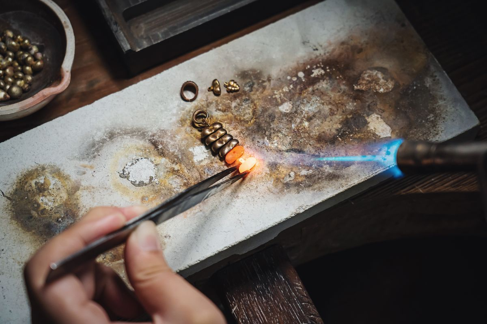
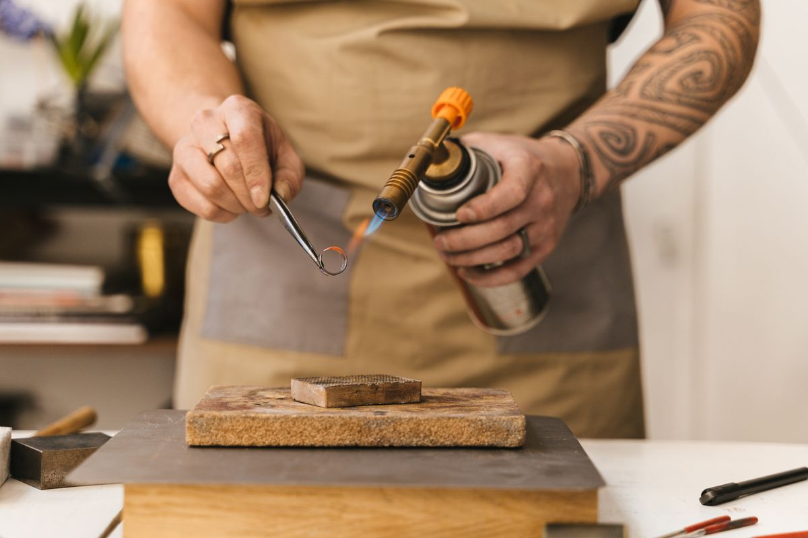
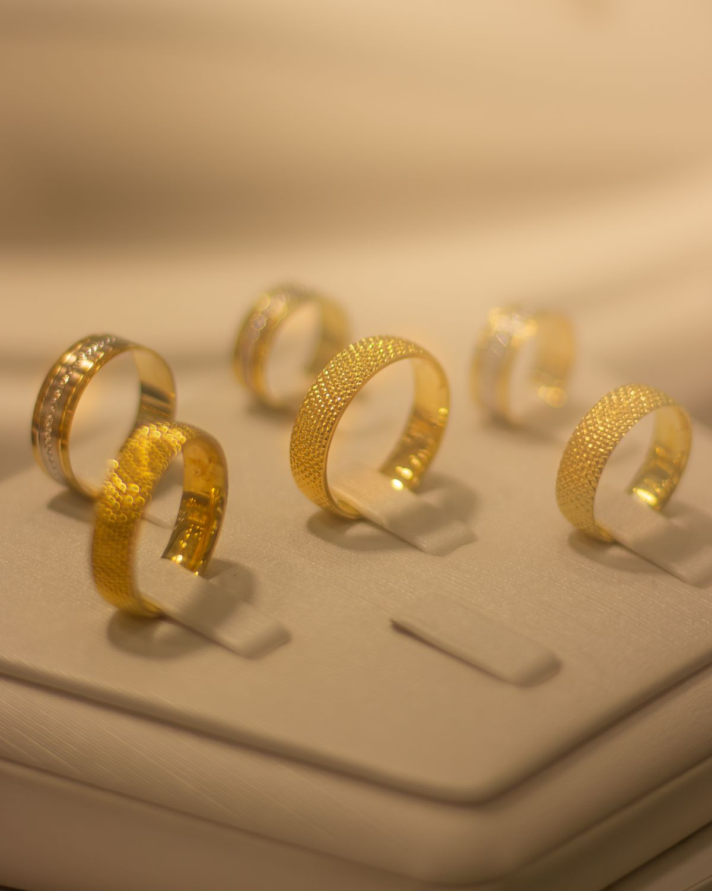

At the bench at The Jeweler's Bench
Custom jewelry, engagement rings, and repairs at the bench in Provo, from a bench jeweler working since 1981.
1
Custom jewelry design
Custom jewelry designed at the bench.
2
Engagement rings
Engagement rings, designed and made to order.
3
Wedding rings
Wedding rings, designed and made to order.
4
Jewelry repair
Jewelry repair at the bench.
5
Appraisals
Jewelry appraisals.
6
Free jewelry cleaning
Free jewelry cleaning during business hours.
Gallery



All gallery photos are stock photos, labeled as such. They show a jeweler at the bench and gold rings, not this shop's work.
Contact
The Jeweler's Bench serves Provo, UT. Questions? Call (801) 377-6929.